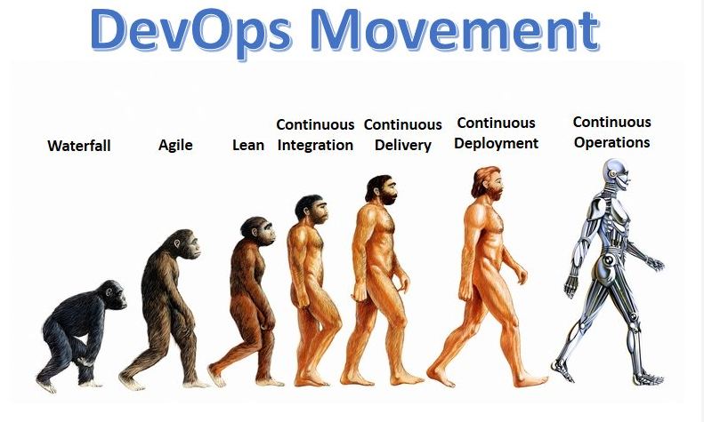
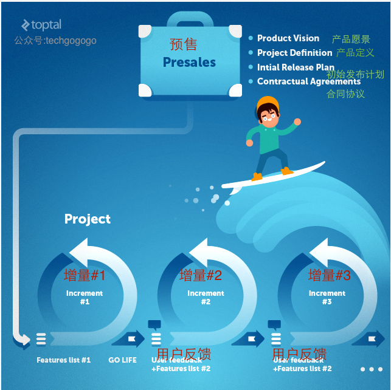

一分钟告诉你究竟DevOps是什么鬼？¶

历史回顾¶
为了能够更好的理解什么是DevOps，我们很有必要对当时还只有程序员(此前还没有派生出开发者，前台工程师，后台工程师之类)这个称号存在的历史进行一下回顾。
如编程之道中所言：¶
老一辈的程序员是神秘且深奥的。我们没法揣摩他们的想法，我们所能做的只是描述一下他们的表象。
- 清醒的像一只游过水面的狐狸
- 警惕的像一位战场上的将军
- 友善的像一位招待客人的女主人
- 单纯的像一块未经雕琢的木头
- 深邃的像一潭幽深洞穴中漆黑的池水
程序员开发了机器语言，机器语言又产生了汇编语言，汇编语言产生了编译器，如今的语言已经多不胜数。每一种语言都有其各自的谦卑用途。每一种语言都表达出软件的阴和阳。每一种语言都在此道之中有其一席之地。
遥想当年，软件程序员的大部分办公司那时还被称作实验室，程序员那时还叫做科学家。为了开发出一套优秀的软件，程序员们必须深入了解他们需要的应用相关的所有问题。他们必须清楚知道这个软件应用在什么场合，这个软件是必须在什么系统上运行。本质上说，程序员对所要开发的软件的所有环节都有透彻的了解，从规格说明书编写、到软件开发、到测试、到部署、再到技术支持。
过了不久，人类(客户)贪婪的特性就开始表现出来，他们开始不断的进行更多的索求。更快的速度，更多的功能，更多的用户，更多的所有所有。
作为一类谦虚、谦卑、且平静的生物，我们的老一辈程序员们将很难在这种爆发性的过度的需求索取中幸存。最好的取胜办法就是往不同的方向进化成不同的新物种。很快，程序员这个称号就开始绝迹于江湖，而那些叫做开发者、软件工程师、网络管理员、数据库开发者、网页开发者、系统架构师、测试工程师等等更多的新物种就开始诞生。快速进化和快速适应外界的挑战成为了他们的DNA的一部分。这些新的种族可以在几个星期内就完成进化。网页开发者很快就能进化成后台开发者，前台开发者，PHP开发者，Ruby开发者，Angular开发者…多得让人侧目。
很快他们就都忘却了他们都是起源于程序员这个共同的祖先的事实，忘却了曾经有过这么一个单纯且平静的，想要让这个世界变得更好的科学家。然后他们开始不断的剑拔弩张，都声称自己才是“程序员”的纯血统继承人。
随着时间的转移，各门各派开始独占山头，很少进行交流互动，只有在迫不得已的时刻才会进行沟通。他们开始不再为同源的遥远的同宗兄弟们的成功而欢呼雀跃，甚至再也不会时把的遥寄张明信片进行嘘寒问暖。
但是在深夜仰望星空的时候，他们还是会发现他们的心底深处的程序员基因还是会不停的闪烁着，期盼着这闪烁的火花能照亮整个银河系并带来和平。
在这场自私且以自我为中心的欲征服世界的赛跑旅程里，程序员的子孙们早把他们真正的工作目标置之脑后-为客户解决问题。面对一拖再拖的项目交付日期，昂贵的开发代价，甚至最终失败的项目，客户们开始对这种情况深恶痛绝。
偶尔，也会有一个闪亮的明星站出来，灵机一动的提供一种办法来尝试结束这种混乱并带来和平。所以瀑布开发流程就应运而生了。这是一个非常了不起的创意，因为它利用了不同团队的开发者们只在必须的时候才进行沟通的这个事实。当一个团队完成了他们的工作的时候，它就会和下游的团队进行交流并把任务进行往下传，如此一级接一级的传递下去，永不回首。

这种方式在一段时间内发挥了效用，但很快，一如既往，贪婪的人们(客户)又开始提出更多的诉求。他们希望能够更多地参加到整个软件的开发流程中来，不时的提出他们的建议，甚至在很晚的时候还提出改需求这种丧心病狂的事情来。
结果就是如大家有目共睹的事实一样，软件项目非常容易失败这个说法已经作为一个行业标准被人们所接受。数据表明超过50%的项目最终都是以失败告终的。更可悲的是，在当时看来，人们对这种情况是束手无策。
值得庆幸的是，每一个时代总会有那么几个思想开放的英雄如漆黑中的萤火虫般冒出来。他们知道这些不同团队的开发者们必须要找到一个可以协同工作、进行交流、并且能够弹性的向客户保证对方将会拿到最优的解决方案的方式。这种尝试最早可以追溯到1957年，伟大的约翰·冯·诺依曼和同行们的努力。但是我们最终却是等到2001年才收获到革命的果实，当时行业的十多个精英创造出了如今闻名世界的“敏捷宣言”。
敏捷宣言基于以下十二条原则：¶
- 我们的首要任务是通过尽早地、持续地交付可评价的软件来使客户满意。
- 乐于接受需求变更，即使是在开发后期也应如此。敏捷过程能够驾驭变化，从而为客户赢得竞争优势。
- 频繁交付可使用的软件，交付间隔越短越好，可以从几个星期到几个月。
- 在整个项目开发期间，业务人员和开发人员必须朝夕工作在一起。
- 围绕那些有推动力的人们来构建项目。给予他们所需的环境和支持，并且信任他们能够把工作完成好。
- 与开发团队以及在开发团队内部最快速、有效的传递信息的方法就是，面对面的交谈。
- 可使用的软件是进度的主要衡量指标。
- 敏捷过程提倡可持续发展。出资人、开发人员以及使用者应该总是共同维持稳定的开发速度。
- 为了增强敏捷能力，应持续关注技术上的杰出成果和良好的设计。
- 简洁——最大化不必要工作量的艺术——是至关重要的。
- 最好的架构、需求和设计都源自自我组织的团队。
- 团队应该定期反思如何能变得更有战斗力，然后相应地转变并调整其行为。
敏捷宣言是为银河系带来和平以及维护各自的平衡所迈出的很重要的第一步。在很长的时间里，相比此前基于流程和机械化的方式，这是第一次基于文化和“人性”来将不同的关键项目关系人连接在一起的方式。人们开始互相交流，进行基本的碰头会议，并开始不断的交流意见和看法。他们开始意识到他们是有着很多比想象中还多的共同点的，客户也开始成为他们之中的一员，而不再是像以往一样只是往项目砸钱然后开始求神拜佛祈求一切顺利如愿。

尽管前面还是有不少的障碍需要克服，但是未来已经光明了许多。敏捷意味着开放和拥抱(需求)改变。但是，如果改变过多的话，人们就很难专注到最终的目标和交付上来。此时精益软件开发就开始破土而出了。
因为对精益软件开发的着迷以及为了达成放逐和驱赶风险的目的，一些程序员的子孙们就开始探首窗外，开始向软件之外的行业进行取经。他们从一家主要的汽车生产商身上找到了救赎。丰田生产系统在精益上面的成就是不可思议的，同时它们的精益生产的经验也是很容易应用到软件开发上来的。
精益有以下7个原则：¶
- 杜绝浪费
- 内建质量
- 创建知识(放大学习)
- 延迟决策(尽量延迟决定)
- 快速交付
- 尊重人员(团队授权)
- 全局优化
将这些放到敏捷上去的话，精益原则就能让人们在从精神上关注做正确的事情，同时还能够让整个开发流程拥有足够的弹性。
一旦敏捷和精益软件开发被软件开发团队采纳，那么下一步就是把这一套原则应用到IT团队上来。把IT也纳入到整体战略上，然后我们就来到了DevOps跟前了！
进入DevOps – 高速公路的三条车道¶
老一派的软件开发团队成员会包含业务分析员，系统架构师，前端开发者，后端开发者，测试员，等等。优化如敏捷和精益原则等的软件开发流程的关注点就在这些地方。比如，软件一旦达到”可以生产“的程度，就会发到系统工程师、发布工程师、DBA、网络工程师，安全专家这些“运维人员”的手上。这里该如何将横在Dev(开发)和Ops(运维)之间的鸿沟给填平，这就是DevOps的主要关注点了。
DevOps是在整个IT价值流中实施精益原则的结果。IT价值流将开发延伸至生产，将由程序员这个遥远的祖宗所繁衍的所有子孙给联合在一起。
这是来自Gene Kim的对DevOps的最好的解析，如果你还没有看过他的《凤凰项目》这本书的话，我建议你真的该好好花时间看看。
你不应该重新招聘DevOps工程师，且DevOps也不应该是一个IT的新部门。DevOps是一种文化，一种理念，且是和IT糅合成一整体的。世间没有任何工具可以把你的IT变成一个DevOps组织，也没有任何自动化方式可以指引你该如何为你的客户提供最大化的效益。
DevOps通常作为下面这三个方式而为人所熟知，而在我眼里我是把它们看成是一条高速公路上的三条车道。你从第一条车道开始，然后加速进入到第二条车道，最终在第三车道上高速行驶。
车道1 – 系统级别的整体效率考量是最主要的关注点，这超过对系统中任何一个单独个体元素的考虑
车道2 – 确保能提供持续不断的反馈循环，且这些反馈不被忽视。
车道3 – 持续的学习和吸取经验，不停的进步，快速的失败。
车道1 – 获取速度¶
要采纳DevOps的原则，理解整个运作系统的重要性并对工作事项进行合适的优先级排序是组织首先要学的事情。在整个价值流中不能允许任何人产生瓶颈并降低整个工作流程。

确保工作流程的不可中断是身处流程中的所有成员的终极目标。无论一个成员或者团队的角色是什么，他们都必须力图对整个系统进行深入的理解。这种思维方式对质量会有着直接的影响，因为缺陷永远不会被下放到“下游“中，这样做的话将会导致瓶颈的产生。
确保整个工作流程不会被瓶颈堵塞住还不够。一个高产的组织应该时常考虑该如何提升整个工作流程。有很多方法论可以做到这一点，你不妨去看下“约束理论”，“六西格玛”，精益，或者丰田生产系统。
DevOps原则不关心你身处哪个团队，你是否是系统架构师，DBA，QA，或者是网络管理员。相同的规则覆盖所有的成员，每个成员都应该遵循两个简单的原则：
保持系统运作流程不可中断
随时提升和优化工作流程
车道2 – 换挡加速¶
不可中断的系统流程是定向的，且预期是从开发流向运维。在一个理想的世界中，这就意味着快速的开发出高质量的软件，部署，并为客户提供价值。
但是，DevOps并非乌托邦式的理想国。如果单向的交付方式是可行的话，我们的瀑布模式早就能胜任了。评估可交付产品和整个流程中的交流对确保质量是至关重要的。这里首个必须实现的”面向上游”的交流通道是从Ops到Dev。
我们独自意淫是件非常容易的事情，但是获取别人的反馈和提供反馈给别人才是探究事实真相的正确方法。下游的每一步(反馈)都必须紧跟着有一个上游的确定。
你如何建立反馈循环机制并不重要。你可以邀请开发人员加入技术支持团队的会议，或者将网络管理员放到Sprint计划会议中去。一旦你的反馈机制就绪，反馈能够被接收并被处理，你就已经可以说是走到了DevOps高速车道上来了。
车道3 – 飞速前进¶
DevOps这条快速车道并不适合意志脆弱的人。为了进入这条车道，你的组织必须要足够的成熟。这里充满了冒险和对失败教训的学习，不断的尝试，并认同屡败屡战和不断的实践是走向成功这条康庄大道的前提条件。在这里你应该会经常听到”套路“这个词，这是有原因的。不断的训练和重复所以能培养出大师，是因为其让复杂的动作常规化。
但是在你要将这些复杂的动作连接起来之前，你很有必要先去掌握好每一个单独步骤。 “适合大师的动作并不适合新手，脱胎换骨之前你必须先要明白道的真谛。“

DevOps的第三个方式/快速车道包括每天分配时间来持续的进行试验，时常的奖励敢于冒险的团队，并将缺陷特意引入到运作系统上来以增加系统的抗击打能力。
为了确保你的组织能够消化好这些方法，你必须在每个团队之间建立好频繁的反馈循环，同时需要确保所有的瓶颈都能够及时的被清理掉，并确保整个系统的运作流程是不可中断的。
实施好这些措施可以让你的组织时刻保持警惕，并能够快速且高效的应对挑战。
概要 – DevOps清单¶
下面是一张你可以用来检验你的组织对DevOps的应用情况的清单。当然你也可以在文章评论后面给出你的观点。
- 开发团队和运维团队之间没有障碍。两者皆是DevOps统一流程的一部分。
- 从一个团队流到另一个团队的工作都能够得到高质量的验证
- 工作没有堆积，所有的瓶颈都已经被处理好。
- 开发团队没有占用运维团队的时间，因为部署和维护都是处于同一个时间盒里面的。
- 开发团队不会在周五下午5点后把代码交付进行部署，剩下运维团队周末加班加点来给他们擦屁股
- 开发环境标准化，运维人员可以很容易將之扩展并进行部署
- 开发团队可以找到合适的方式交付新版本，且运维团队可以轻易的进行部署。
- 每个团队之间的通信线路都很明确
- 所有的团队成员都有时间去为改善系统进行试验和实践
- 常规性的引入(或者模拟)缺陷到系统中来并得到处理。每次学习到的经验都应该文档化下来并分享给相关人员。事故处理成为日常工作的一部分，且处理方式是已知的
总结¶
使用现代化的DevOps工具，如Chef、Docker、Ansible、Packer、Troposphere、Consul、Jenkins、SonarQube、AWS等，并不代表你就在正确的应用DevOps的原则。DevOps是一种思维方式。我们所有人都是该系统流程的一部分，我们一起分享共同的时光和交付价值。每个参加到这个软件交付流程上来的成员都能够加速或减缓整个系统的运作速度。系统出现的一个缺陷，以及错误配置的团队之间的“防火墙”，都可能会使得整个系统瘫痪， 所有的人都是DevOps的一部分，一旦你的组织明白了这一点，能够帮你管理好这些的工具和技术栈就自然而然的会出现在你眼前了。